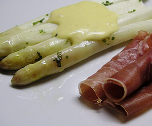

Spargel en papillote (nach Felix Thomann)
5 von 61 Kilo gute elsässer oder badenser Spargeln, gut schälen und dann die Enden grosszügig abhacken. Die verbleibenden Stangen sollten etwa 15 am lang sein, mehr nicht. Dann die Spargeln auf ein sehr grosses Backpapier verteilen, mit Salz und Zucker bestreuen, ein paar Tropfen Zitronensaft dazu träufeln, und ein paar Butterflocken drauf. Dann noch Peterli und Schnittlauch gehackt drüberstreuen. Jetzt wird das grosszügig bemessene Backpapier zu einem Beutel zusammengebunden (papillote) und dann ab damit in den Ofen bei etwa 160 bis 180 Grad. Gute drei Viertel Stunden dort in der Hitze lassen (je nachdem wie dick die Spargelstangen sind). Mit Mayonnaise Servieren.
